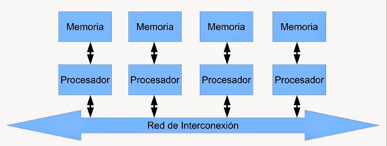

Cuando se desea incrementar el desempeño más de lo que
permite la técnica de segmentación (pipeline), se requiere
utilizar más de un procesador para la ejecución del programa
de aplicación.
Los CPU de multiprocesamiento según Flynn se clasifican
de la siguiente manera:
SISO
(Single Instruction, Single Operand) computadoras
Monoprocesador
SIMO
(Single Instruction, Multiple Operand) procesadores
vectoriales, Exenciones MMX
MISO
(Multiple Instruction, Single Operand) No
implementado
MIMO
(Multiple Instruction, Multiple Operand) sistemas
SMP, Clusters, GPUs
Los procesadores vectoriales, son computadoras pensadas
para aplicar un mismo algoritmo numérico a una serie de
datos matriciales, en especial en la simulación de sistemas
físicos complejos, tales como simuladores de clima,
explosiones atómicas, reacciones químicas, etc.
Donde los datos son representados como grandes números de
datos en forma matricial sobre los que se deben se aplicar el
mismo algoritmo numérico.
La mayoría de los procesadores modernos incluye algunas
instrucciones de tipo vectorial, tales como las extensiones al
conjunto de instrucciones tales como MMX y SSE. Estas
instrucciones les permiten procesar flujos multimedia más
eficientemente.
Los Procesadores Digitales de Señales (DSP), son
procesadores especializados en el procesamiento de señales
tales como audio, vídeo, radar, sonar, radio, etc.
Cuentan con instrucciones tipo vectorial que los hace muy
aptos para dicha aplicación. Suelen utilizarse en conjunto
con un microcontrolador en dispositivos como reproductores
de audio, reproductores de DVD y Blueray, teléfonos
celulares, sistemas de entretenimiento, sistemas de
adquisición de datos, instrumentos médicos, controles
industriales, etc.
En los sistemas SMP (Simetric Multiprocessing), varios
procesadores comparten la misma memoria principal y
periféricos de Entrada /Salida, normalmente conectados por
un bus común.
Se conocen como simétricos, ya que ningún procesador toma
el papel de maestro y los demás de esclavos, sino que todos
tienen derechos similares en cuanto al acceso a la memoria y
periféricos y ambos son administrados por el sistema
operativo.
Pueden formarse con varios núcleos en un solo circuito
integrado o con varios circuitos integrados en una misma
tarjeta madre. La primera opción ha sido popularizada al
hacerse más económicos los procesadores multinúcleo de los
principales fabricantes y con su uso en sistemas de gama
media y baja, e inclusive en teléfonos celulares y tabletas.
La segunda opción fue la que se uso en un principio y sigue
siendo usada en en estaciones de trabajo y en servidores de
alto rendimiento debido a que incrementa el poder
computacional del sistema, pero también incrementa
considerablemente el costo del sistema.
Clusters
Conjuntos de computadoras independientes conectadas en
una red de área local o por un bus de interconexión y que
trabajan cooperativamente. Con un sistema de procesamiento
paralelo o distribuido. Consta de un conjunto
de computadoras independientes, interconectadas entre sí, de
tal manera que funcionan como un solo recurso
computacional.
Es clave en su funcionamiento contar con un sistema
operativo y programas de aplicación capaces de distribuir el
trabajo entre las computadoras de la red.
Este tipo de computadora paralela se ha vuelto muy popular
por que permite usar los avances en los procesadores
comerciales que tienen una muy buena relación costo
rendimiento y se puede incorporar rápidamente los avances
que proporciona las nuevas tecnologías en cuanto es
económicamente viable.
Sin embargo, se debe tener cuidado al implementar la
aplicación, ya que si los datos que hay que pasar de un
procesador a otro son demasiados, el tiempo empleado en
pasar información de un nodo a otro puede sobrepasar a la
ganancia que se tiene al dividir el trabajo entre varios
procesadores.

Procesadores Gráficos
(Graphics Processing Unit GPU)
Sistemas diseñados originalmente para el procesamiento de
gráficos, con múltiples procesadores vectoriales sencillos
compartiendo la misma memoria.
La cual también puede ser accedida por el CPU. Por la gran
cantidad de núcleos con los que cuenta, logran un excelente
desempeño al ejecutar algoritmos que se adaptan a ser
paralelizados, a tal grado que muchas de las
supercomputadoras más rápidas de la actualidad utilizan
estos procesadores, y los fabricantes de tarjetas gráficas
producen versiones de sus productos especializadas en
acelerar los cálculos de propósito general.